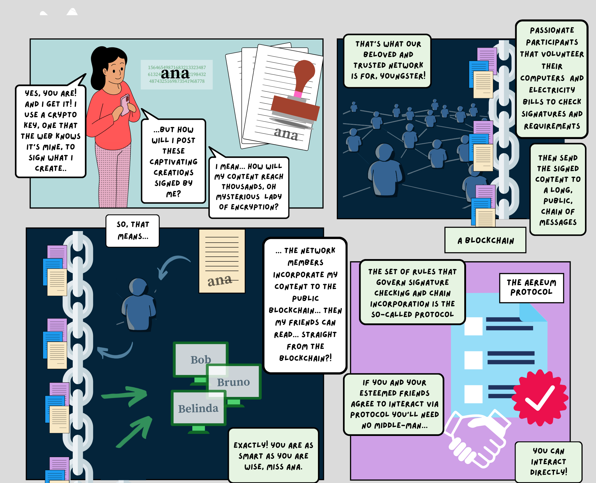
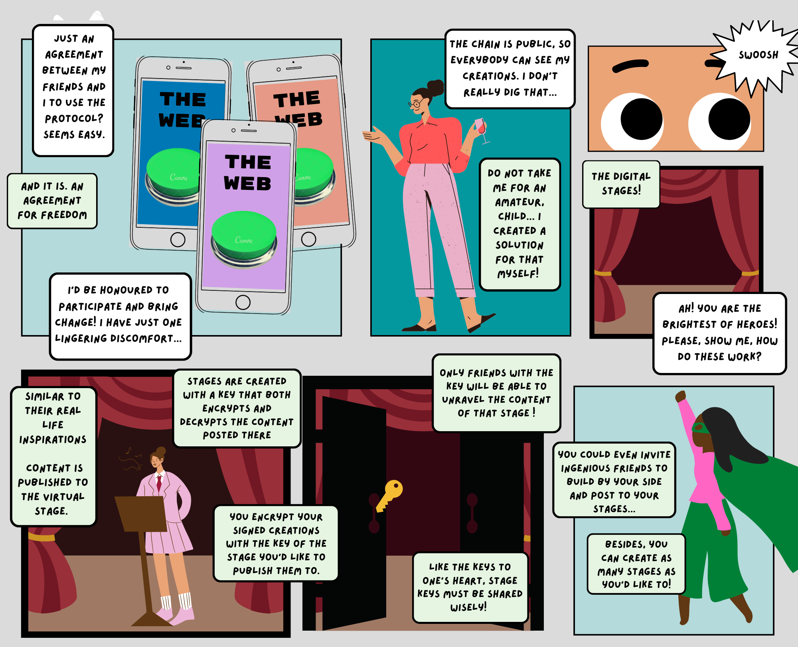
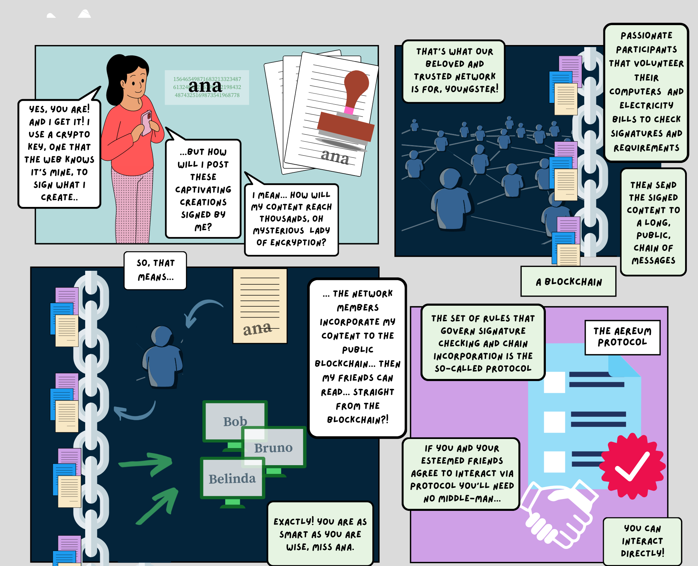
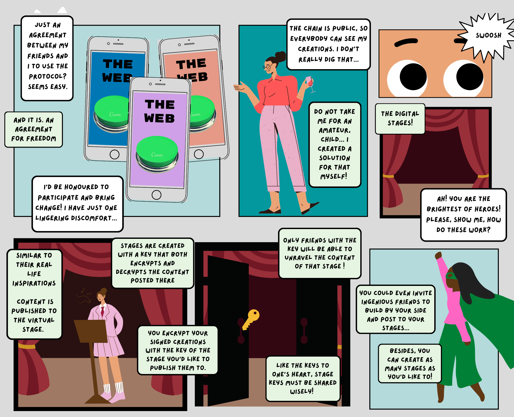

Aereum hopes to bring back human values and independence to digital interfaces,
setting people free to pour innovation, personality and experimentation into their
interactions
1
Interfaces are not neutral
The character of an interaction is always heavily altered by the interface.

Some interfaces promote uniformity and encourage familiar, popular choices...
... lacking in warmth and human exchange

While others encourage diversity, connection, people’s curiosity and experimentation
Shouldn't digital music discovery be at least as surprising and varied as in a record store,
garage bands and underground singers found by chance,
maybe pointed out by a bypasser? Unexpected choices leading to unexpected experiences!
And so with movies, photography, literature...
How can these seem somehow less varied , colourfull and diverse today, despite the amazing
reach rendered by the digital medium?
Interfaces.

We must reclaim interfaces to reclaim human values lost,
depreciated and forgotten by the digital environment.
Content should not adjust to fit a format. It must be the other way around.
So we propose content exchange through a protocol. :)

Content sharing adjusted to app /provider frame
Content sharing on a protocol,
free from a single app / provider
interface
Long ago people came up with a protocol to make machines communicate with each other. On top of that the internet was born.
Aereum proposes a protocol to make humans digitally communicate with each other, no intermediary plataform needed. Ideas free from the dictatorship of provider’s formats.

Content is yours to decide how to share it and whom to share it with! Your ideas, your choices!
Create content free to circle around and be invented and reinvented. No frame to limit your imagination.
3
Digital stages of a global festival
Aereum protocol enpowers you to take a stage online and be seen by everyone that matters to you, without the need for the intermediary plataforms.

Today we stumble and adapt to find the right place to interact with our audiences
And that’s because we are people...
We should have it all in one single digital venue. Why not? When freed from the prision of preset interfaces, interactions may take all and any shapes, audiences flexible to follow the contents they’d like better.
Stages are the analog image that inspired Aereum’s digital exchange medium. They are native and neutral human interaction grounds, flexible to embrace most types of human interactions.
The protocol enpowers you to take your stage online and be seen by the audience that chose to follow you without the intermediary to dictate rules for content format and distribution. Without having to adapt your interaction to your interface!
A set of rules agreed upon by different participants of a network to ensure direct digital communication. That’s the protocol, Aereum’s protocol .
Nerds :)
Aereum is a protocol designed to enable mediation-free communication
on the web, that is, direct digital interaction between humans. The guidelines presented by the protocol rely
both on known cryptography technics, and an original proof-of-stake
consensus algorithm with state checksum check.
On top of the protocol the eponymous peer-to-peer
Aereum network is proposed, comprising unique identification
handles for members and a cryptography powered communication layer
inspired by the concept of stages. A secure channel mechanism is also provided,
supported by ephemeral tokens.
The processing of network instructions into blocks
for incorporation into the public chain is moderated by
a dedicated fungible token.
[1] protocol
Direct digital interaction between humans is
possible if both a public identification mechanism for members, and a decentralized
communication mean are provided.
Aereum proposes that members are uniquely identified by the public key of an asymmetric cryptographic pair, and
a unique handle "@user_name". Valid cryptographic signature checked against the
public key is considered proof of authorship.
For direct communication exchange it proposes the sending of messages to a decentralized
blockchain. Content access is managed by encrypting the message with a cipher
formerly associated to a digital stage.
The protocol covers a range of types of interactions translated
into a set of possible instructions. In addition to the sending
of messages, it encompasses creation of stages, granting
of reading, writing and moderation priviledges for a stage,
waivering and annulment of signature priviledges (so-called
power of attorney), creation of a secure channel between members,
shuffle of keys for stage managing, and sponsorship
proposals and acceptances.
[2] network
Aereum network runs on top of its namasaked protocol, enabling the
use of the Aereum protocol by the participants. To meet communication
needs, it must be a high throughput, low latency,
cheap and reliable network.
The consensus algorithm proposed is scalable to the order of dozens
of instructions per day, per member, globally. The cost estimate is
of the order of US$ 1 cent per thousand instructions processed.
Network recieves new instructions sent by any member and
orders such instructions into blocks that will be posteriorly
incorporated into the blockchain. Instruction incorporation
and state update consist in checking signatures, sufficiency
of fungible token balance on the appropriated wallets,
overall wallet balances, members tokens and handles,
stages tokens, sponsorship proposals and power of attorney priviledges.
The last two items are explained in the instructions section.
For node synchronisation new candidates stake a predetermined
amount of the network's fungible token and then connect to
an existing node to recieve the current state. After transfer, if the
state is correct, candidates can validate new nodes. Every node
is required to publish a proof of state checksum to all peers on a regular basis.
Only nodes providing the correct proof remain valid, until next check, and so on.
[3] cryptography
Cryptography technics adopted by the protocol and network.
Hash function: SHA256 hash algorithm as defined in FIPS-180-4. Used in the state checksum processing.
Symmetric Cryptography: AEAD cipher mode based on AES-256 encryption.
Used for encryption of content published to the
blockchain according to Aereum's stage mechanism.
Asymmetric Cryptography: ED25519 signature algorithm based on
RFC 8032 (https://ed25519.cr.yp.to/). Used for network's
member identification, for managing priviledges
regarding stage's actions and for
secure channel communication.
Diffie-Hellman secret exchange: X25519 function defined
on RFC 7748. The function can either be called on
persistent public keys or ephemeral ones. Used to
exchange stage's keys for content access, and for
moderation or writing privileges.
[4] members
New participants must generate an asymmetric
cryptographic pair of keys. To join the
network, the member must send a message to
a validator node containing: the public key token of the
generated pair, an unused handler caption and a
JSON with the member's information.
The JSON file can contain a name,
a signed certificate of authenticity and links
for static off-chain storage of files.
These information can be later altered.
Message size accepted by network prevents
exchange of large content files,
so static links can be referred to by an html hook,
pointing to the place these files are stored by a
third-party service, or self-hosted.
Since all instructions need a wallet with the
necessary fungible token balance to be processed by the
network, if the new member does not possesses an
aero wallet they must find someone willing to afford the
"join network" message.
[5] stages
Content access is managed by message encryption, using
a mechanism methaphorically referred to as stage
(as a reference to its real-life counterpart).
To create a stage the member must generate three asymmetric cryptographic
key pairs and one symmetric key. Each of the three public
keys will be respectively associated with the stage's ownership, moderation
and writing priviledges. The cipher will be used for content
encryption and shared to allow for reading priviledges.
All content published to the network must be
assigned to a previously created stage. If the
stage creator wishes to grant reading, moderation
or writing privileges to a requester,
the respective cryptographic key will be exchanged using the
Diffie-Hellman algorithm.
[6] ephemeral tokens
To provide a primitive for secure communication within
the network, the protocol proposes an instruction for the
creation of an ehphemeral token. It provides a
transient token, the only type of token with
permission to sign messages anonymously.
The ephemeral token created will be valid for
a finite number of blocks. Through anonymously signed messages
two members can negotiate ephemeral keys
and then interact anonymously within the
network for some time.
Anonymity is guaranteed up to the anonymity
of the wallets used for payment of the instructions fees.
[7] fungible token
As a reward to network nodes for the processing,
validating and broadcasting of information, the
protocol proposes a dedicated fungible token, aero.
Aero tokens are created at every new block
incorporation to the blockchain.
To inhibit spams, robots and to protect the network
from hoarding of simpler handles, all instructions
sent to the network require an amount of aero
to be waived by the sender. This fee is also granted to network nodes.
[8] instructions
Join Network: Includes a new member to the network, assigning a unique handle to its public key
Update Info: Updates the static information of a network member with a new JSON file
Create Stage: Creates a stage with its assigned public key and a description
Join Stage: A member requests to become part of an existing stage
with the priviledges they'd like to have (read, write, moderate)
Accept Join/Moderate/Write Request: Stage owner accepts the request of another
member to access/moderate/post content on the referred stage
Content: Publishes content to a target existing stage, must be signed with writing key of referred stage
Shuffle Audience Keys: Changes an existing stage access, moderation and writing keys
Grant Power of Attorney: Grants another member the power to
sign instructions on behalf of the author
Revoke Power of Attorney: Removes a power of attorney granted by a member
Sponsorship Offer: Sponsored content message to be published to a target stage
Sponsorship Acceptance: Accepts the Sponsorship Offer message
Create Ephemeral Token: Creates transient tokens to provide anonymous communication
Secure Channel: Creates a secure channel for communication between members
[9] consensus algorithm
To balance network requirements, the protocol proposes an
original proof-of-stake with state checksum as its consensus algorithm.
The validating nodes need only to keep record of the
network state in order to validate new instructions.
An elected node checks the new instructions received
against protocol requirements and groups them into a block.
The block must be signed by a subset of
the remaining nodes from the validating pool.
If 2/3 of all signing nodes agree on the newly
created block, it is considered definitive and broadcast to
interest parties. Nodes are rewarded with newly
minted aero and fee collection.
[10] blocks
The network nodes, already state syncronized,
receive new instructions that must be ordered into
blocks such that no single instruction is duplicated and
all instructions of a new block are compatible
with the set of instructions in prior blocks.
New blocks can be started without having the
information about previous block,
the specific block from which it is being
validated being thus specified.
This specific block is required to be a live checkpoint.
The vast majority of honest signing members of the network
should agree on the content of a new proposed
block before it is incorporated by the blockchain.
[11] network state
At any block the state of the network is given by:
⦁ balances of all wallets with non-zero aero
⦁ tokens and respectively assigned handles for all members
⦁ current ownership, moderation and writing tokens for all stages
⦁ non-expired and non-exercised sponsorship offers
⦁ valid power of attorney grants
Candidate nodes must syncronize the network state,
not entire blockchain. To ensure state syncronization,
nodes must periodically publish a proof
of correct checksum for the current state in
order to remain in the validating pool.


 


